Diver is a series of tools designed to help you to understand your programs better. It brings dynamic analysis and reverse engineering right into your Eclipse workbench. And it makes them easy. Follow this documentation to get started with Diver.
A lot of attention has been put into making sure that launching a trace is as easy as possible. Launching or debugging as a trace is as easy as launching a typical application. This document will step you through the basic process.
The trace launches won’t be available in the favourites menu of your perspective by default, so you will have to configure them manually. It is not a difficult process, however. Just follow these simple steps.
1. Open The Launch Configuration Dialog
The launch configuration will not be in your favourite launches by default. So, in the Java Perspective, or in the Plug-in Development Perspective, use the drop-down menu from either the Run... or Debug shortcut. Then, select Configurations....

2. Create A New Java Application Trace
Locate the Java Application Trace launch configuration type on the tree view to the left of the Configurations Dialog, and select the New Configuration button at the top of the dialog.
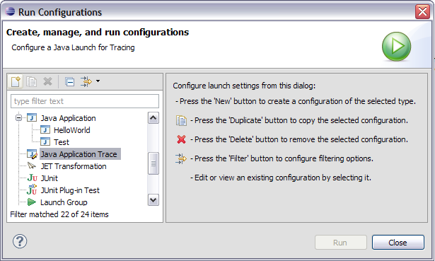
3. Set Up The Java Application
Finally, you must set the application to be run. This involves selecting the project for the launch, and the associated
Main class. In this example, we will be running a simple Tetris game. The Project has been set to
Tetris and the main class has been set to
org.oversoul.tetris.ui.TetrisFrame.

4. You May Now Trace Your Program
Once you have followed these three steps, you may trace your Java application. Default trace-specific settings have been made that should be suitable for most users. If you would like to tweek your trace, however, you may. Read the next section for more information.
The Java trace launches are designed to help you find within your program the information that is most interesting to you. Iit is able to apply a filtering mechanism so that only the most important details are indexed for your access. These filters allow you to adjust your “perspective” of the running application, and they are set up with default values that should be suitable for most traces. But, for those who need finer tuning, they are configurable. In fact, they can be configured at any time — even after the trace has completed. So, if you don’t set up the filters right at this point, don’t worry; you can change them later. The different portions of the Java Trace tab are described below.
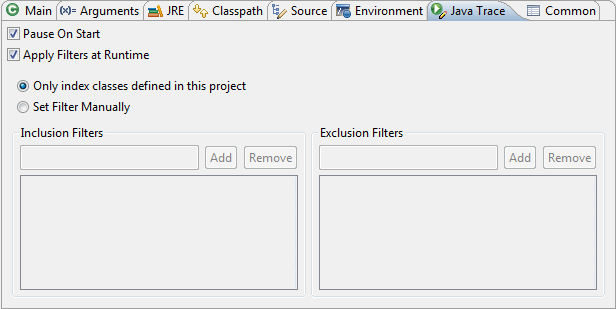
or it can apply them at the indexing step as described in A Note About Indexing. If you apply the filters at runtime, you should notice a marked improvement in speed while
running the trace, and also a much faster indexing time. However, you will not be able to change the information displayed in sequence diagrams later on if you reanalyze the trace as described in Gaining A Different Perspective
At this point, it may be a good idea to discuss a little bit about what it means when Diver “indexes” or “filters” a trace. There are a few details that you may like to know in order to fully understand what it is that you are looking at once your trace is completed.
First of all, the basic operation of Diver involves logging millions of events which occur while your program is running. Most importantly, it logs when your Java program executes methods/constructors and when your program exits those methods/constructors. Regardless of how you set up your filters, Diver logs all such events so long as your current trace is not in the “paused” state (see Controlling The Trace for more information). However, while your program is running, and for some time after it has completed, Diver indexes these logs so that you can work with them more easily and efficiently. This is where your filters come in.
Diver will only index information that you say is interesting. This includes method entries that you have chosen to
include in the filter, but not to
exclude. If you have set your filters manually, and chosen to not exclude or include anything, then all events will be indexed. For example, suppose that you had chosen to set your filters manually so that only the methods on the
com.net.Org class will be indexed (that is, you have added
com.net.Org.* to the
Inclusion Filters). This means that every method in the
com.net.Org class will become a “trigger” for the indexer. When the indexer sees such a trigger, it will store that trigger, all of the calls on the call-stack that lead to the trigger, and all of the side-effects (i.e., the entire call-tree from the trigger). In other words, the indexer will store all method calls that are connected to the trigger, but no others.
If you choose Only index classes defined in this project on the Java Trace tab, then only the methods defined in the source code of the containing project will be triggers for the indexer.
Since Diver stores events regardless of whether or not they will be triggers for the indexer, you may re-index the trace at any time. This is called Reanalyzing the trace. This is discussed in the Exploring Your Code section under Gaining a Different Perspective.
The trace launches have been associated with a new perspective called the Diver Perspective. It has been designed to contain the different elements you need to be productive in your program understanding/reverse engineering tasks. When you launch your application, you may be prompted to switch to the Diver Perspective. Select “yes” to open it.

The Diver Perspective contains six regions by default. What is contained in those regions will be discussed further in other portions of this documentation. What follows is a brief overview.
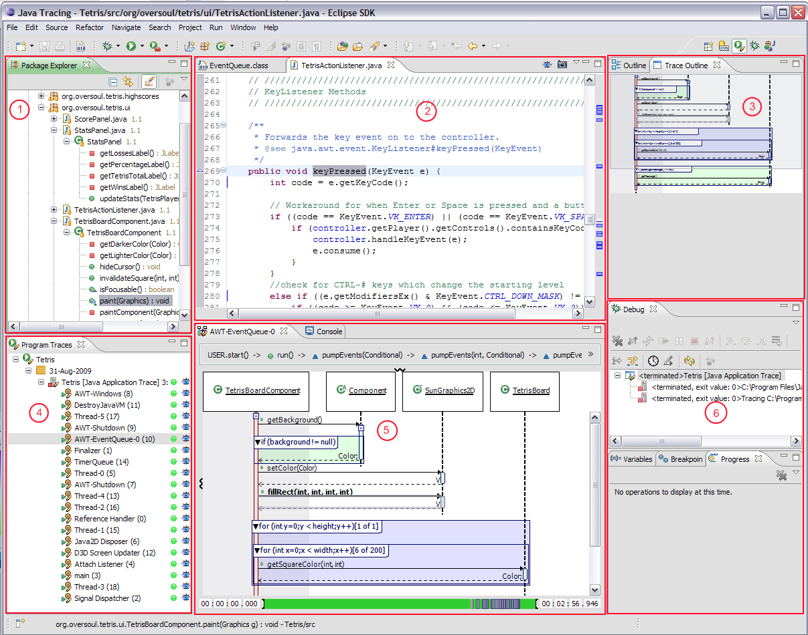
Performing real-time logging of programs can have an adverse effect on the performance of those programs. So, Diver offers the ability for users to control, and log, exactly when the application is being traced and when it is not. This functionality is exposed through the Debug view via two new buttons in the toolbar:
Diver also offers the ability to launch an Eclipse Application trace. Everything that has been discussed in this document also applies to Eclipse traces, but with one notable exception. Setting Up the Trace indicated that it is possible to filter the analysis of your trace to methods that appear only within the project that encapsulates your program. Such a filter does not make sense in terms of Eclipse applications, which are normally dependent on numerous projects which represent plug-ins/bundles for the application. So, instead of offering a filter for the associated project, Eclipse traces will, by default, filter to plug-ins defined in your workspace. Everything else runs in the same manner as indicated in the rest of this document.
You can also launch your traces in Debug mode. This may help you to target your traces more effectively. For example, you may know that a feature that you are trying to investigate always occurs within the context of a specific method call, but you don’t know when it occurs after that method is called. You can set a breakpoint on that method, and keep your trace paused until that breakpoint is hit. Once the breakpoint is hit, resume the trace, and step out of the method. Once again, pause the trace. Now, you will have traced everything that occurred within the method of interest, but nothing else.
Diver offers interactive visualizations designed to help you navigate through your traced programs. They help you to see what occurred and in what context. This section will explain to you some of the key features of the visualizations.
The Program Traces View is the central place to view and organize your traces. It is a simple tree viewer that offers a lot of functionality. First, and foremost, it offers you access to your traces. We will be discussing only its most basic features here. It will be discussed more in following sections. For now, we will get started with a simple picture.

The Program Traces View always displays your traces as a four-level hierarchy, organized in the following way:
For example, the above picture shows us that the launch Tetris was executed once on August 31st, 2009; that it was a Java Application trace executed at 3:29 PM and it contained 19 threads. You may notice, as well, a column of amber dots to the right of the view. They are important to the features of Diver, but we will not be discussing them just yet. What is important for now is that this view gives us access to the executed threads of our Java program. Through it, we can open an important visualization for our traces: the Thread Sequence View. Double clicking on any thread in the Program Traces View will open that thread as a sequence diagram in the Thread Sequence View. The next few sections describe the functionality of this view.
The major visualization provided by Diver is the interactive sequence diagram provided by the Thread Sequence View. It is based on UML2 sequence diagrams, but with some enhancements and changes. This section describes sequence diagrams and their function.
Sequence diagrams are designed to display the sequential passing of messages between objects in a system. This makes them suitable for system in which the functionality can be expressed as an ordered set of operations performed on or by the elements of that system. Hence, they are good visualizations for the operations in an object-oriented program’s threads, since all operations on an object occur at specific times. Below is an illustration of a sequence diagram in Diver.

There are numerous elements to a sequence diagram. Each of them are numbered in the above image. A brief description of each is given below, followed by a more in-depth discussion
The following sections describe in detail how each of the visual elements are utilized within Diver.
Classifiers are used to describe the kinds of objects that are alive during a system’s execution, and they are always tied to lifelines. In a typical UML2 sequence diagram, there would by one classifier for every object in the system. Objects can be of various kinds (human actors, software objects, disk data-stores). However, indicating a classifier for every object in a system quickly becomes overwhelming, as a system may include many, many millions of objects. So, Diver only indicates a classifier for each class in the system, as well as a special user class which simply represents the “start” of the system, initiated by you, the user.
Classes are indicated by simple rectangles at the top of a lifeline. The user is indicated by a simple “stick-man” figure at the top of the lifeline. Classes may also be decorated with a pictorial icon. This occurs when Diver is able to find the source-code associated with a particular class, and so can infer further information about the class (such as its visibility). The icons should be familiar to users of Eclipse’s Java Development Tools.
Diver also offers a third kind of classifier which is not typical to UML2: packages. These are used to indicate when you have chosen to hide certain aspects of the trace by grouping lifelines by the packages that the classes are defined in. This feature is covered more in the following section.
UML2 is a static modelling language. It is not designed for user interaction. Diver, on the other hand, is designed for user interaction. So Diver both extends and limits UML2 in order to facilitate interaction. One of the first places that this occurs is within the lifeline.
The first thing that you may notice when you open a thread in the Thread Sequence View is that it doesn’t look like much work is done in it. There will be only one classifier, one lifeline, and one activation box visible — all of them belonging to you, the user. There is likely more going on.
The reason that there is only one lifeline visible is because, in Diver, lifelines are only shown if there is a visible path of messages to at least one activation box on the lifeline. By default, only one activation box is visible: the start of the program, initiated by the user. The next section will discuss more about interacting with activation boxes. However, you can try to interact with the start of your program by selecting the little ‘+’ symbol at the top of the first activation box. If anything more occurs in the visualized thread (there may not be — it could have been idle during your program), further messages, classifiers, lifelines, and activation boxes will appear.
In standard UML2, lifelines are used to indicate the full life-span of an object. That is, they begin when an object is created, and end when an object is destroyed. In Diver, however, they all begin at the same time, and they last as long as there are visible activation boxes on the lifeline. This is done in order to facilitate some of the advanced features that have been built in to the viewer, which cannot be expressed in static UML2. One of those advanced features is lifeline grouping.
Java applications often make use of many utility and system classes that are required to perform low-level operations. For example, even before the classes that you define can be used, they must be first loaded from disk. This involves invoking methods on the class
java.lang.ClassLoader, which will operate on the file system, involving calls on many classes in the
java.io package. This may result in a sequence diagram that displays many hundreds of uninteresting lifelines. An unfiltered trace of a simple HelloWorld application, for example, uses more than 45 classes. Diver offers the ability to decrease the number of lifelines that are displayed by giving you the ability to group them by their containing packages. That is done as follows.
First, if you examine the view, you will see a grey bar with a symbol that looks like a small bold w on it. This is a selectable sash which when dragged down will reveal a “package pane” above your main diagram. There, you will see numerous folder-shaped icons organized as a tree. These are the packages utilized in your software:

If you mouse-over a package icon, it will grow larger so that you can see the full package name. Selecting it will “pin” it to this size, and display lines connecting to the classifiers for the classes that are contained in the package. Conversely, selecting a classifier on a lifeline will display a line connecting it to its containing package. When you mouse over a package, you will also see a small box with a ‘-’ embedded in it. Selecting this box will “collapse” the package. The visual effect of this is that all of the lifelines for classes contained in that package will be “grouped” into a single lifeline with the package as its classifier. The image below shows the effect of collapsing the
java package.

Note that collapsing a package will also cause all of its sub-packages to be collapsed onto the same lifeline. You will see a small ‘+’ sign to the top-left of the new package classifier. Selecting this symbol will return the diagram to its previous state.
Activation boxes represent activity in an object. In Java, objects perform processing (i.e., are made active) when methods are called on them. So, you can understand activation boxes as work being performed within a Java method.
As mentioned previously, you won’t see much in your diagram unless you interact a little with the activation boxes. Activation boxes in the Diver sequence diagrams act similarly to the nodes in a standard tree viewer. You can think of a sequence diagram like a large tree structure where messages originating from an activation box cause that activation box to have “children” at the other end of the message. In fact, program traces produce what are often called “call trees” because they do have a strict tree structure.
So, the basic interaction that you have with an activation box is to expand or collapse it much like a tree viewer. Expanding an activation box will reveal the messages that originate from that activation box. These messages will be of two kinds: calls or returns. Calls will result in further “child” activations, and “returns” simply indicate that an activation on a class is ending, and returning to the previous activation. More will be said about messages in the following section. Below is an image that has several activation boxes expanded.
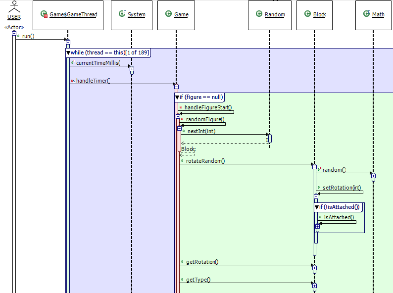
Looking at these pictures, you may notice that different activation boxes appear in different colours. This is because Diver uses the source code associated with your program to infer information about the program and display it to you in the sequence diagram. Activation boxes are associated with Java methods. Their colour indicates the visibility of the methods. These colours are related to those that you may be used to from the Eclipse JDT. Public methods are indicated by green activation boxes; protected ones by orange; private by red; and package-level by blue. If no source code can be found for a method, its corresponding activation boxes will be presented in white.
There are four basic ways that Java passes messages between objects: method calls; method returns; exception throws; and exception catches. Thrown exceptions behave essentially like cascading method returns, until the exception is caught. So, this is how they are treated in the Diver sequence diagrams.
In Diver, method calls appear as messages from existing activations to new activations on another object (or the same object). They can be revealed by expanding the activation boxes on which they originate. The label on the message will be the name of the method that was called, followed by a parenthesised list of its parameter types. If source code for the method can be found, the label will also be decorated by a small icon indicating various attributes of that method (is it public? is it static?, etc.). These icons are the familiar method icons provided by the JDT. Returns and thrown exceptions are indicated as messages returning from the end of an activation box back to the originating activation box. They are labelled with the return type for the method.
You can interact with method calls using your mouse. When you hover over a method call, the entire call-tree originating at that call is made bold in the view. If you select a method call, then message is made bold, and the sub-calls are highlighted in the view.
Java can be a well-structured programming language in which method calls are grouped into coherent groups using blocks. Blocks are typically part of conditional decision making structures such as
if statements, loops, or error handling. If Diver can find source code for your trace, it does some sophisticated analysis to link the messages in the trace with the blocks of code in which they occur. This helps to give you the context in which a message occurs, and it also helps to simplify the diagram.
Diver is able to distinguish three different kinds of groups: conditional groups (
if/else/case statements); error handling (
try/catch); and loops (
for/while/do..while/foreach). Each has its own colour. Conditional groups are displayed in green, error handling groups are in red, and loop groups are in blue. The label of the group is set to the condition or the source code that defines the group.
Like lifelines and activations, they can be expanded and collapsed as well. By default, groups are expanded so that you can see all of the messages that they contain. Collapsing a group hides all of the messages and activations inside of it, making your diagram smaller. The image below shows the effects of collapsing several groups.

Loop groups are a special kind of group. They are used not only to organize messages that occur within the loop’s block, but they also help to decrease the size of the displayed diagram. Many java programs will contain loops that iterate hundreds, or thousands of times. Diver hides the repeated messages within loop groups, potentially decreasing the size of the diagram by many thousands of times.
There is one problem, though. It is likely the case that different iterations of the same loop will, in fact, have very different effects. So, Diver does make it possible for you to look at all of the effects of a loop by “swapping” iterations. You can swap an iteration by right-clicking on the label for the loop. A drop-down list will appear that will allow you to select the iteration that you would like to inspect. If there are more than 10 iterations, you are given the option to select a specific iteration using a dialog.

The groups in the Diver sequence diagram help to gain an understanding about control flow and program
state without having to look at the source code itself. Sometimes, though, you might find that they clutter your view. There are two ways that you can control the way that groups are displayed in the Diver sequence diagram. They can be found in the drop-down menu of the view’s toolbar.
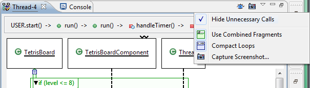
-
Use Combined Fragments If this menu item is unselected, then the message groups will not be displayed in the Diver sequence diagram. You will not be able to see program state or control flow, but the diagram
will be a little smaller (assuming you have not collapsed any of the combined fragments).
-
Compact Loops Diver normally shows only one iteration of a loop at a time. You can see other iterations by using the sequence diagram’s context menu. If you would like to see all iterations at once,
you can deselect this option.
You now have a basic understanding about how to work with sequence diagrams. The following sections will help you through some of the more advanced features that are offered for working with sequence diagrams in Diver.
This section is here just for your information. You, in fact, don’t have to do anything to save your view state in Diver. The view state is automatically saved for you. So, don’t worry about it. The next time you open your sequence diagram, it will be in the same form that you left it.
Sequence diagrams can get very large, very quickly. So, it can be difficult to keep track of what you are looking at, especially with limited screen real estate. So, diver offers an overview of your sequence diagram. It is called the Sequence Outline View, and It is basically a compressed version of the sequence diagram that is in the Thread Sequence View. You can move the viewport of the Thread Sequence View by selecting or dragging on the Sequence Outline View.

If you are extra observant, you may have noticed that every sequence diagram in Diver begins with a single “start” activation on the “User” class. This is the root of the sequence diagram. But, what if you aren’t interested in seeing everything from the start of the program? You’ve found the one activation of a method that you are looking for, and you want to get rid of all the “extra” stuff from your view. Well, lucky for you, Diver is designed to help you do just that.
You can select any activation box and make it the “root” of your sequence diagram. This is called focussing, and it is easy to do. Simply right-click on any activation box, and select Focus On ... from the drop-down menu:

But your last context isn’t lost. Diver gives you an easy way to get back to the original root of the diagram. If you look at the top of the view, you will see a grey bar, that always starts with the text “User.start()”. This is the
message breadcrumb. It lists all of the call messages from the root of the thread to the activation box of current focus. You can move anywhere up the call-chain simply by selecting one of the messages listed in the breadcrumb. Sometimes, though, the call chain will be too long to list all of the messages in one line. In this case, you can view the entire call chain as a drop-down menu by selecting the button on the far-right of the breadcrumb (it looks like
>>). Choose the new root activation from the menu:

There are other ways of filtering your view to make sure you see only what you are interested in. Perhaps you know that the functionality that you are interested in was executed at a particular time (perhaps by using the trace duration dialog, described in Controlling Your Trace). You can filter the sequence diagram to specific times by using the timeline.
The timeline looks like a long green bar at the bottom of the Thread Sequence View. It looks something like this:

On either end of the timeline are several text boxes. They indicate the time range that the timeline is set to. The format is
hh:mm:ss:ppp. For example, the above image indicates that the user started the trace 1.825 seconds into the execution of the program, and ended it at 2 minutes, 57.903 seconds. You may also notice a couple of coloured ranges in the timeline. These ranges indicate different events that occur during the trace. In this instance, the yellow range indicates a period in which the trace was paused — no messages will have been logged during this time. The lighter, smaller, pink range indicates the time of the currently selected element in the sequence viewer. In this case, the user has selected a message that occurred near the end of the trace.
The range is also indicated graphically. There are two vertical I-beam like bars at each end of the timeline. These can be dragged to change the range of the timeline. when you do this, the sequence diagram will refresh so that only messages and activations that occur within the selected range are displayed. The following images show the before, and after effects of changing the range in the timeline. Notice how the filtered diagram fits within one screen, without the need to scroll.
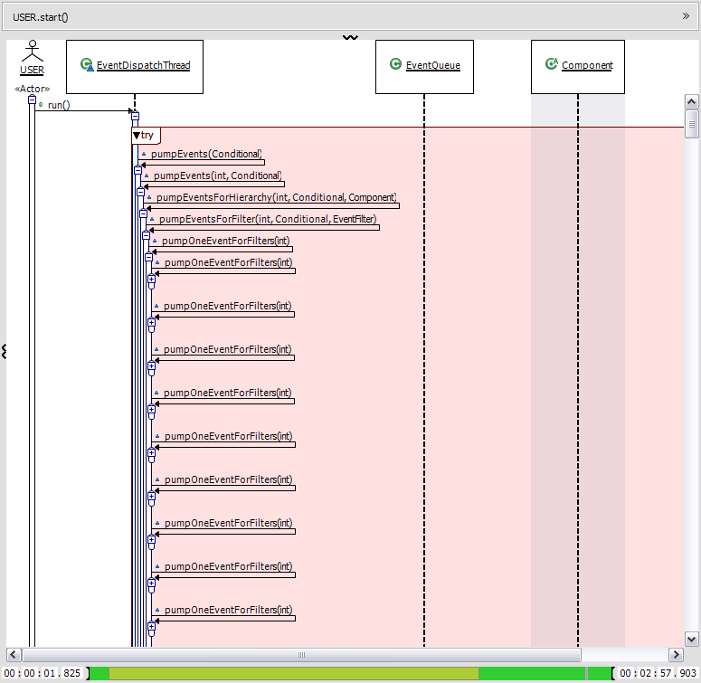

Large sequence diagrams may have hundreds, or even thousands, of lifelines. This can make it impossible to layout the diagram in such a way as to make sure that the source and the target of a message is always visible. Take the following image for example:

You can see that there is a method call on the
TetrisBoard class, but you can’t tell what it is called, or where it came from because the originating lifeline is far to the left of the visible area. Diver offers another feature that can help with this: the
clone pane. The clone pane is a second view of your sequence diagram, which exactly mirrors, and is synchronized with the main view that you will look at most of the time. However, you are able to scroll it horizontally so that you can view two different portions of the same sequence at the same time. Reveal the pane by dragging the sash on the left of the view (indicated by what looks like a rotated
w). The result will be something like this:

As you can see, the method that was called is
TetrisBoard.clear(), from the
Game class. You can also see that it is only called within the context of an
if statement, so that you can tell that the current player must be in the “preview” state (seen by the message block with the label
if (getPlayer().isPreview())).
If an element in the sequence diagram has an icon attached to it, or is any colour other than white, it is likely that Diver has been able to locate some source code for that element. Looking at source code can be of immeasurable value when trying to understand software. So, Diver makes it easy to get back to the source. Simply double-click on an element to reveal it in a source-code viewer. Classifiers will reveal classes, activation boxes will reveal method definitions, and messages will reveal the line of code at which the message originated.
One of the great things about Diver is its tight integration with your Eclipse workspace. Diver attempts to make it easier to understand your software. One of the most important representations of your software is simply its source code. So, Diver has many features that enrich the source browsing experience.
Diver helps to organize your perspective on your source code. This is done by selecting a trace to be active. An active trace is basically a “lens” through which Diver can focus your workbench. When a trace is active, Diver can filter your Package Explorer, and annotate your source code according to what occurred during that trace.
Activating a trace is simple. In your
Program Traces view, you will notice that beside each trace is a small, amber
 icon. Selecting this icon will activate your trace. The icon will now be a green
icon. Selecting this icon will activate your trace. The icon will now be a green
 . Selecting it again will deactivate your trace. That is all there is to it.
. Selecting it again will deactivate your trace. That is all there is to it.
Once you have activated a trace, you can take advantage of Diver’s filtering features. First, look for the
 icon in the toolbar of the Package Explorer. This icon will filter the package explorer according to the active trace. Select it to see the results. They can be very significant. What you will see in your package explorer are only those elements which contain at least one method that was called during the active trace. This includes projects, packages, files, classes, and methods. The reference libraries (for example the JRE System Library) will be filtered as well. The following is an example of the impact of filtering.
icon in the toolbar of the Package Explorer. This icon will filter the package explorer according to the active trace. Select it to see the results. They can be very significant. What you will see in your package explorer are only those elements which contain at least one method that was called during the active trace. This includes projects, packages, files, classes, and methods. The reference libraries (for example the JRE System Library) will be filtered as well. The following is an example of the impact of filtering.

To the left is an unfiltered package explorer. On the right is the filtered one.
Diver will even do finer-grained filtering for you. When you select a thread in the active trace, Diver will adjust the filter to show only those elements that contain methods that were called within the selected thread. The image below shows the filters when just the active trace is selected, and when the thread called Thread-4 is selected. Compare it to the filtered Package Explorer above. This feature can help you isolate the calls that occurred within each thread.
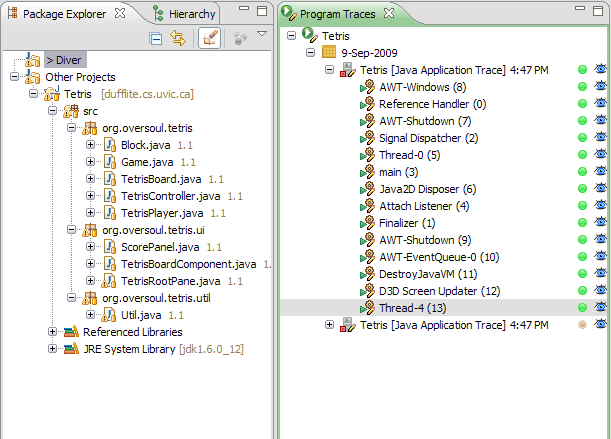
You may recall a discussion about indexing that was covered in the section Launching A Trace. Basically, during, and for some time after, the time that you are tracing a program, Diver has to do some analysis to extract the information from the trace that you have determined is important. By default, Diver will assume that “interesting code” is the code that is in your workspace. But what if you are interested in more fine-grained detail. For example, you might want to know when files are accessed on disk. It’s like having a different perspective on your running code. You can change this perspective at any time in Diver by reanalyzing a trace. Doing so is simple. Just right-click on the trace and select “Reanalyze...”. You will be presented with a dialog much like the Java Trace tab in the launch dialog that was discussed before:

You can enter the custom filters that you would like to use during the indexing. You can check the progress of the analysis via the progress dialog:

The Program Traces view will also let you know when a trace is being analyzed. The icon for the trace will be decorated with a small golden “gear” that looks like this: . Note it is usually a good idea to make sure that a trace is not active while it is being analyzed. If the trace is large, many changes (hundreds of thousands!) to the underlying data may cause the various views in the workbench to frequently refresh. This may make the user interface unresponsive, and it may appear to hang for a long period. So, unless your trace is quite small (spanning only a few seconds), it is best to deactivate it before trying to reanalyze it. Also remember that reanalysis is only effective if filters are not applied at runtime, as described in Setting Up The Trace.
Even if you are careful to pinpoint exact time periods for your trace, it can be difficult to find what you are looking for because dynamic program traces can be fairly “noisy”. The Java Virtual Machine can, in fact, perform all kinds of operations that you are unaware of, but that do result in method calls. A classic example is that of classloading. Before a class is first used, its code must be loaded from disk. So, though your code may simply state
new MyObject(), the JVM may, in fact, make numerous calls to the system using classes like
java.io.File and
java.io.DataInputStream. These calls, though they might not be interesting to you, will get logged and indexed. Or, perhaps, you are trying to find out what happens when you push a button in a graphical user interface. Behind the scenes, there may be many objects listening to every mouse movement you make, when you are only interested in the one click.
To help you find the methods that you are interested in, Diver offers the ability to compare the differences between traces. Doing so will affect the filters in your Package Explorer to limit the number of methods that are exposed. You can hide method calls in a way that is analogous to hiding layers in many popular graphics programs. When you activate a trace, you will notice a small
 icon beside it. This icon means that the methods of the trace are not filtered out in the current filter. You will see the same icon beside any trace that was launched using the same launch configuration. You are able to hide the methods in these traces by selecting the
. The icon will then toggle to a
. The filters are set up to display all of the methods that appear in the active trace, but not any that appear in the traces with a
beside them. So, for example, you might run your GUI program first just to log a number of random mouse movements, and second to log the mouse click. If you hide the first trace, you should now only see the methods in and around the time of your mouse click. Below is an example of the difference that can be made by using such comparison.
icon beside it. This icon means that the methods of the trace are not filtered out in the current filter. You will see the same icon beside any trace that was launched using the same launch configuration. You are able to hide the methods in these traces by selecting the
. The icon will then toggle to a
. The filters are set up to display all of the methods that appear in the active trace, but not any that appear in the traces with a
beside them. So, for example, you might run your GUI program first just to log a number of random mouse movements, and second to log the mouse click. If you hide the first trace, you should now only see the methods in and around the time of your mouse click. Below is an example of the difference that can be made by using such comparison.
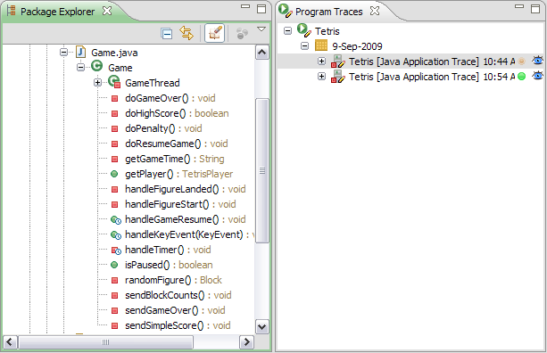

So far this section has been dedicated to filtering your explorer view so that you can pinpoint parts of code that were called during your application. Diving Into Your Trace was about visualizing the trace. What if you want to switch between the two. Diver offers ways of doing that.
So, you have set up your filters, and you have found a method that looks interesting, but you want to see the context in which it was called. You can get started by right-clicking on the method. You should see near the bottom of the pop-up menu an item called “Reveal In”. Selecting it will reveal another menu listing all of the threads in which the method was called. Selecting one will automatically open the Thread Sequence View, and show to you the first time that the method was called in the given thread. It is as easy as that.

There is one catch to the above description. A method may be called many, many times during a program, even within the same thread. How can you see the different contexts in which it was called. The timeline of the Thread Sequence View is there to help.
When you select a method in the Package Explorer, and you have the Thread Sequence View opened on a thread that calls that method, you will see a number of blue markers in the timeline, much like the following.
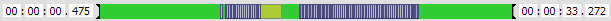
Each blue marker represents a call to the selected method in the thread. Right-clicking on one of those blue markers will reveal a menu like this one:
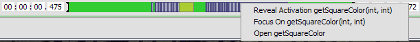
Selecting “Reveal...” will simply expand the current sequence diagram, and scroll so that the activation corresponding to the method call can be seen in the view. “Focus...” will reset the root of the sequence diagram to the activation, and “Open...” will open the method in a source code editor.
In Comparing Traces we saw that it is possible to filter the Eclipse Package explorer by activating on trace, and hiding others. By default, the filter is applied to only the package explorer and the Diver sequence diagram will show you every method call that is part of the thread that it is displaying. You can apply the same filter used on the Package explorer to the sequence diagram by selecting the “eye”
icon on the sequence diagram toolbar. When you “close” this eye, Diver will calculate which method calls may be hidden from the sequence diagram view according to the filters set in the Program Traces view. It may take some time to perform this calculation. During the calculation, the eye icon will appear to “blink”. When complete, the diagram will refresh.
There are two different ways that this filter can be applied. You can either choose to keep all method calls visible in the diagram, greying out the filtered ones, or you can choose to remove them from the view completely. Greying out the method calls may be helpful for when you would like to understand the entire behaviour of the system, but you would like the diagram to indicate which method calls are “important” for further exploration. An example of such a view is as follows.

If you would like to remove the method calls from the view completely, you can use the sequence diagram’s drop-down menu and select Hide Unnecessary Calls:
The picture below shows the same sequence as above, but with unnecessary calls hidden.
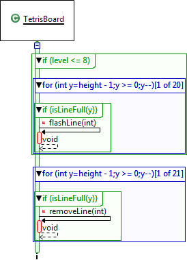Diver is designed, in part, to help you understand source code. So, there are features that help you to read it. Diving Into Your Trace already discussed how it is possible to jump to your source code using the visualizations. But Diver also does more. It offers a code coverage indicator. When you activate a trace, and open a source code editor, if any methods were called in the program represented by that source code (and they were indexed during analysis), they will be marked in the source code and in the overview ruler by blue markers. So, you can be sure of what lines were executed during the trace. See the image below for an example.

Diver now offers ways for you to keep a record of your traces, and share them with other people. This can be done
in two main ways: by exporting screenshots of your sequence diagrams; and by exporting and importing entire
traces.
Diver makes it easy to export screenshots of your sequence diagrams. Just look for the little camera
(
 ) icon. You can find it on the sequence diagram’s toolbar, drop-down menu,
) icon. You can find it on the sequence diagram’s toolbar, drop-down menu,
or pop-up menu:
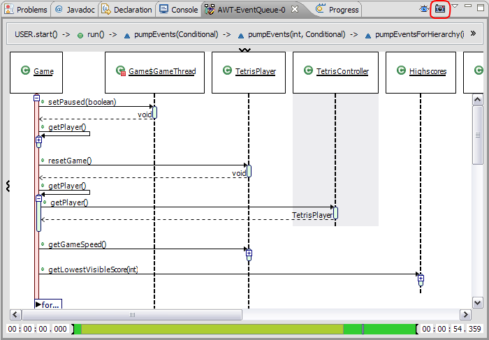
Selecting it will give you a standard file/save dialog. You can export the image as a bmp, png, or jpeg file. When you
export the diagram, you will have a full-sized picture of the diagram exactly as it appears in the main pain of the
viewer:

Diver also makes it possible to export and import entire traces. You can do so by using the standard import/export
wizards under the category
Diver, or by using the shortcut in the
Program Traces view:

The Diver export wizard will present you with a page that allows you to select the trace to export, and the threads
to export within that trace. By default, the exported traces will exclude any threads that do not contain activations
(“empty threads”). You can change this by unselecting the check box at the bottom of the page. You will also need
to select a file to save the trace into. The file extension is
dvt, which stands for "Diver trace file".*
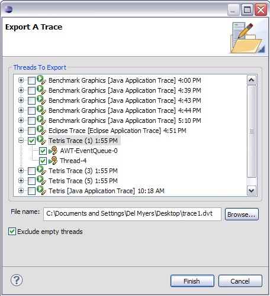
That is all you need to know to export traces. Now, all you need is a way to import them.
Importing traces in Diver is very similar to running or analyzing traces. Just open the Import Trace wizard:

Then, use the file browser to select a Diver trace file:

Once a file has been set, the import wizard will automatically scan that file to make sure that it is a valid Diver trace
file. Then, import the trace just as if you were using the
Reanalyze Trace wizard (see Gaining
A Different Perspective for more information).
Once you select
Finish, the trace will be copied into Diver’s trace storage, and the files will be analyzed. You will
see the newly imported trace in your
Program Traces view.
*Diver trace files, much like Java jar files, are simply files compressed in the ZIP format. If you are really interested
in seeing what is in the trace file, you can reset the extension to
zip, and explore the file.
This work was funded under contract with Defence Research And Development Canada, contract number W7701-82702/001/QCA and a DND/NSERC grant with IBM and DRDC Valcartier (DNDPJ 380607-09).
Thanks to Martin Salois, David Ouellet, and Philippe Charland of the DRDC for their work, research, and support.
Thanks to Dr. Margaret-Anne Storey of the University of Victoria for her help and supervision.
Thanks to Chris Callendar for supplying the Tetris software on which the examples for this documentation are based.
Diver Redistributes the HSQLDB database binaries, version 1.8.1.
HSQLDB is Copyright © 1995-2000 by the Hypersonic SQL Group.
All rights reserved.
Redistributions in binary form must reproduce the above copyright notice,
this list of conditions and the following disclaimer in the documentation
and/or other materials provided with the distribution.
Neither the name of the Hypersonic SQL Group nor the names of its
contributors may be used to endorse or promote products derived from this
software without specific prior written permission.
THIS SOFTWARE IS PROVIDED BY THE COPYRIGHT HOLDERS AND CONTRIBUTORS "AS IS"
AND ANY EXPRESS OR IMPLIED WARRANTIES, INCLUDING, BUT NOT LIMITED TO, THE
IMPLIED WARRANTIES OF MERCHANTABILITY AND FITNESS FOR A PARTICULAR PURPOSE
ARE DISCLAIMED. IN NO EVENT SHALL THE HYPERSONIC SQL GROUP,
OR CONTRIBUTORS BE LIABLE FOR ANY DIRECT, INDIRECT, INCIDENTAL, SPECIAL,
EXEMPLARY, OR CONSEQUENTIAL DAMAGES (INCLUDING, BUT NOT LIMITED TO,
PROCUREMENT OF SUBSTITUTE GOODS OR SERVICES;
LOSS OF USE, DATA, OR PROFITS; OR BUSINESS INTERRUPTION) HOWEVER CAUSED AND
ON ANY THEORY OF LIABILITY, WHETHER IN CONTRACT, STRICT LIABILITY, OR TORT
(INCLUDING NEGLIGENCE OR OTHERWISE) ARISING IN ANY WAY OUT OF THE USE OF THIS
SOFTWARE, EVEN IF ADVISED OF THE POSSIBILITY OF SUCH DAMAGE.
This software consists of voluntary contributions made by many individuals on behalf of the
Hypersonic SQL Group.